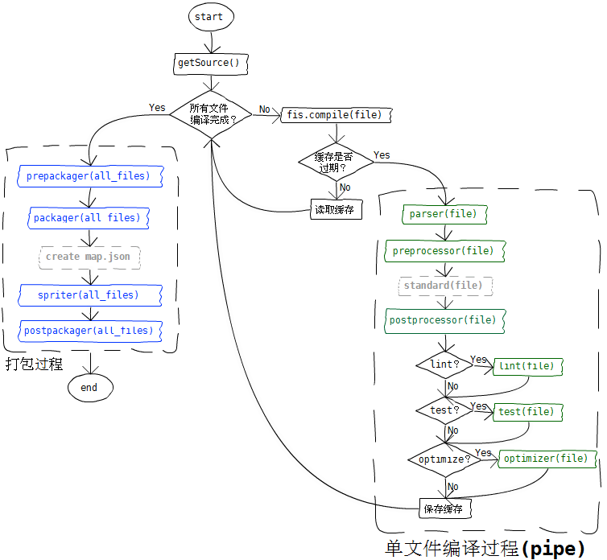

FIS3 源码分析
一、FIS3是什么？
FIS3 是面向前端的工程构建工具。解决前端工程中性能优化、资源加载（异步、同步、按需、预加载、依赖管理、合并、内嵌）、模块化开发、自动化工具、开发规范、代码部署等问题。
如果对FIS3还不够了解，请查阅官方文档。
FIS以fis-kernel为核心。fis-kernel提供了FIS的底层能力，包含了一系列模块，如配置、缓存、文件处理、日志等。主要核心代码都在fis3/lib这个文件夹内。1
2
3
4
5
6
7
8
9
10
11
12
13lib/
├── cache.js // 用于缓存目标文件的编译信息和编译结果。
├── cli.js // 命令行相关的信息和工具类方法暴露在此模块中。
├── compile.js // （单）文件编译模块。
├── config.js // 配置模块，包含fis默认配置。
├── file.js // 文件操作模块。
├── fis.js // fis构造模块。
├── log.js // 日志输出模块。
├── project.js // 项目相关模块，比如获取、设置项目构建根路径、设置、获取临时路径等。
├── release.js // fis 整体编译入口。fis release 的时候调用，依赖 compile.js 完成单文件编译。同时还完成如文件打包等任务。
├── require.js // 用来加载 fis 插件。
├── uri.js // 基于路径查找文件，支持相对路径，基于项目的绝对路径。
└── util.js // fis 中工具类操作集合。
二、fis3 release？
下面我将分析运行fis3 release这条命令将发生什么：
首先，我们从package.json文件的bin字段可以得到，fis3的命令入口为bin/fis.js文件。bin/fis.js文件主要是用来解析并包装命令行的参数。bin/fis.js中用到了minimist和liftoff插件。
minimist是用来解析命令行参数的。
liftoff用于构建命令行应用程序的引导工具。
通过调用1
2
3// var argv = require('minimist')(process.argv.slice(2));
// env: https://www.npmjs.com/package/liftoff#callbackenv
fis.cli.run(argv, env);
将程序转入lib/cli.js中执行。
lib/cli.js主要封装了命令行相关的信息和工具类方法。fis release等命令将会调用具体的插件来执行任务。1
2
3
4var cmd = fis.require('command', cmdName);
...
// cli: fis.cli
cmd.run(argv, cli, env);
程序转入了fis3-command-release这个插件中执行。
fis3-command-release主要是对release流程的控制：watch release livereload deploy。
其中最核心的是文件编译部分，调用了fis.release，在lib/release中，这是fis整体编译入口。
1.总体编译流程
下面就进入到fis的编译流程中，我们首先用一张图来描述整个编译过程：

然后我们开始进入fis.release函数，和图中一样，首先是获取需要编译的文件列表。1
2
3
4
5
6
7
8
9
10
11
12
13
14
15
16function(opt, callback) {
var src = {};
if (Array.isArray(opt.srcCache) && opt.srcCache.length) {
opt.srcCache.forEach(function(path) {
if (!fis.util.isFile(path)) return;
var file = fis.file(path);
if (file.release) {
src[file.subpath] = file;
}
});
} else {
src = fis.project.getSource();
}
}
先从opt.srcCache需要编译的文件列表，当没有填写时，fis 将通过fis.project.getSource()获取。
然后触发release:start,1
fis.emit('release:start', ret);
添加一些事件钩子函数：1
2
3
4
5
6
7
8
9
10
11
12
13
14
15
16
17
18
19
20
21
22
23
24
25
26
27
28
29
30
31beforeEach 编译开始前执行的回调函数，无论走缓存与否。
afterEach 编译完成后执行的回调函数，无论走缓存与否。
beforeCompile 编译开始前执行，当采用缓存时不执行。
afterCompile 编译完成后执行，当采用缓存时不执行。
beforeCacheRevert 在缓存被应用到文件对象前执行。
afterCacheRevert 在缓存被应用到文件对象后执行。
fis.on('compile:start', (onCompileStart = function(file) {
opt.beforeEach && opt.beforeEach(file, ret);
}));
fis.on('compile:end', (onCompileEnd = function(file) {
opt.afterEach && opt.afterEach(file, ret);
collect(file); // //添加到resource map中
}));
fis.on('process:end', (onProcessEnd = function(file) { // 添加同名依赖
if (file.useSameNameRequire) {
if (file.isJsLike) {
file.addSameNameRequire('.css');
} else if (file.isHtmlLike) {
file.addSameNameRequire('.js');
file.addSameNameRequire('.css');
}
}
}));
var onAddFileToCompile = function(file) {
pending.push(file);
};
fis.on('compile:add', onAddFileToCompile);
然后开始一个个进行单文件编译：1
2
3
4
5
6
7
8try {
while (pending.length) {
var file = pending.shift();
fis.compile(file, opt); //单文件编译
}
} finally {
fis.removeListener('compile:add', onAddFileToCompile);
}
当所有文件编译结束后，开始进入打包阶段：1
2
3
4
5
6
7
8
9
10
11
12
13
14
15
16// 首先开始根据用户配置的 fis.match 生成 pack 表。
conf = buildPack(ret);
// 然后根据用户的配置和默认配置，进行prepackager, packager, spriter, postpackager打包
['prepackager', 'packager', 'spriter', 'postpackager'].forEach(function(name) {
if (packager[name]) {
// fis.match 中配置的优先，所以，这里直接覆盖就行了。
fis.media().set('modules.' + name, packager[name]);
}
fis.util.pipe(name, cb, opt[name]);
});
// 然后触发编译结束
fis.emit('release:end', ret);
2.单文件编译过程
下面我们进入fis.compile来看看单文件编译过程：1
2
3
4
5
6
7
8
9
10
11
12
13
14
15
16
17
18
19
20
21
22
23
24
25
26
27
28
29
30
31
32
33
34
35
36
37
38
39
40
41
42
43
44
45
46
47// 编译相关函数入口, 输入为 文件对象，没有输出，直接修改文件对象内容。
function(file, context) {
// 默认文件编译会尝试从缓存中读取，如果缓存有效，将跳过编译。
if (file.useCache && memoryCache[file.realpath]) {
revertFromMemory(file, memoryCache[file.realpath]);
return file;
}
// 只有启用 cache 的时候才存入 memoryCache
file.useCache && (memoryCache[file.realpath] = file);
// lint 置前，不使用文件缓存
if (file.isText() && exports.settings.useLint) {
pipe(file, 'lint', true);
}
...
// 然后触发编译开始
fis.emit('compile:start', file);
...
// 下面真正编译文件的代码只有这句：
process(file);
// 加hash
if (file.useHash) {
file.getHash();
}
// 触发编译结束
fis.emit('compile:end', file);
// 若不是文件变化触发的重新编译，则进入相关文件编译。
context && context.fromWatch || file.links.forEach(function(subpath) {
var f = fis.file.wrap(fis.project.getProjectPath() + subpath);
if (f.exists() && !~compileStack.indexOf(f.realpath)) {
fis.emit('compile:add', f);
}
});
return file;
}
我们重点查看process函数，发现十分简洁，就是之前图示之中的流程：1
2
3
4
5
6
7
8
9
10
11
12
13
14
15
16
17/**
* 单文件编译入口，与 {@link fis.compile} 不同的是，此方法内部不进行缓存判断。
* @param {File} file 文件对象
* @memberOf fis.compile
* @name process
* @function
*/
function process(file, context) {
fis.emit('process:start', file);
pipe(file, 'parser');
pipe(file, 'preprocessor');
pipe(file, 'standard');
postStandard(file, context);
pipe(file, 'postprocessor');
pipe(file, 'optimizer');
fis.emit('process:end', file);
}
其中pipe(file, 'standard')会转入builtinStandard，这是内置的标准化处理函数：1
2
3
4
5
6
7
8
9
10
11
12
13
14
15
16
17
18
19
20
21
22
23
24
25
26
27
28
29
30
31
32
33
34
35
36
37
38
39
40
41
42
43
44/**
* 内置的标准化处理函数，外部可以覆写此过程。
*
* - 对 html 文件进行 {@link fis.compile.extHtml} 处理。
* - 对 js 文件进行 {@link fis.compile.extjs} 处理。
* - 对 css 文件进行 {@link fis.compile.extCss} 处理。
*
* @param {String} content 文件内容
* @param {File} file 文件对象
* @param {Object} conf 标准化配置项
* @memberOf fis.compile
* @inner
*/
function builtinStandard(content, file, conf) {
if (typeof content === 'string') {
fis.log.debug('builtin standard for [%s] start', file.realpath);
var type;
if (conf.type && conf.type !== 'auto') {
type = conf.type;
} else {
type = file.isHtmlLike ? 'html' : (file.isJsLike ? 'js' : (file.isCssLike ? 'css' : ''));
}
switch (type) {
case 'html':
content = extHtml(content, null, file);
break;
case 'js':
content = extJs(content, null, file);
break;
case 'css':
content = extCss(content, null, file);
break;
default:
// unrecognized.
break;
}
fis.log.debug('builtin standard for [%s] end', file.realpath);
}
return content;
}
主要是对fis3中的内置语法做处理。
fis3 release的主要流程就分析到这，其实流程特别清晰，就是我们一开始所放的那张图，根据那张图我们可以编写合适的插件，来满足我们不同的构建需求。
总结
fis3的构建流程是值得我们好好学习的，流程特别清晰，相比webpack的“黑盒”，fis每一步做了什么都一目了然，我们自己也可以很方便的编写需要的插件。不过fis的生态和webpack真是没法比，最近学习了vue，官方推荐用webpack，而且还有vue-cli省去了配置的麻烦，一套写下来真是特别舒爽，下面我还是会着重了解下webpack。